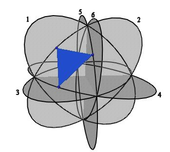
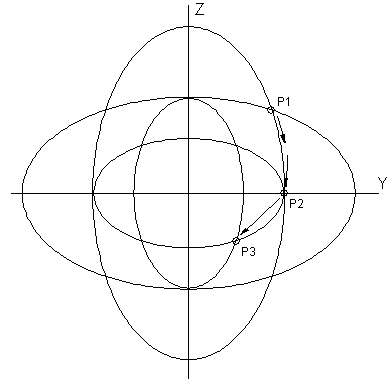
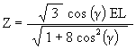
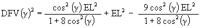

As mentioned above, with physical, solid triangles, a Jitterbug’s vertex does not follow the complete path of an ellipse. We now remove this constraint and let the vertices travel along the complete elliptical path. There are then two alternatives for Jitterbug triangle motion:
Figure #18 The sub-Octahedron Zone of ellipse
We consider the first case here. In the next section we consider the second case.
Beginning in the Octahedron position, the vertices are now to travel within the sub-Octahedron zone of the 6 ellipses of the Jitterbug. As shown in Figure #19, each of the Octahedron’s vertices split into 2 vertices and the diametrically opposite vertices, on the same ellipse, travel in the same direction.
Figure #19 Jitterbug through sub-Octahedron zone

Figure #18 Triangle vertices switch ellipses
Note that the 3 vertices of a triangle have switched ellipses. That is, in going from the original VE position to the original Octahedron position, a vertex of a triangle follows a particular ellipse. For the triangle to continue to rotate and to remain on some elliptical path, the vertex of the triangle switches to one of the other 3 ellipses which pass through the same Octahedron vertex position. The vertex, having switched, can now travel along the sub-Octahedron zone portion of an ellipse.
Figure #20 shows one triangle of the Jitterbug’s triangles with its 3 vertices on ellipses 1, 3, and 6. Once the triangle is in the Octahedron position, the vertices switch to follow along ellipses 5, 2, 4, respectively.
In order to accomplish this motion, the Jitterbug triangles move radially, rotate and change scale. This scale change is unlike the motion of the original Jitterbug motion describe previously.
In one sub-Octahedron zone position it is seen that the Jitterbug forms another, smaller VE. (See Figure #19.) Being another VE configuration, we can draw another pair of smaller ellipses within the original ellipses. This construction of another sub-VE within the original VE by following the ellipse paths can be continued to form sub-sub-VEs, etc. and therefore sub-sub-Jitterbugs.

Figure #21 First sub-Jitterbug ellipses
As Figure #21 shows, the Octahedron vertex at P1 is moved to position P2 along the sub-Octahedron zone of the original ellipse. Again, this is not part of the normal Jitterbug motion and is accomplished by a continuous change in scale of the triangles. From P2, a sub-VE position, the vertex may either continue along the original ellipse or it may smoothly switch to the smaller embedded ellipse and move to P3. P3 is a sub-Octahedron vertex position. The motion from P2 to P3 is a normal Jitterbug motion, i.e. without scaling.
As before, we can map out the various polyhedra positions of the Jitterbug motion as its vertices traverse the sub-Octahedron zone. This is shown in Figure #22 and Figure #23.
Figure #22 One Dodecahedron, Icosahedron and VE position within sub-Octahedron Zone of ellipse
Figure #23 Dodecahedron, Icosahedron and VE positions
From the original, large VE, (maximum radial distance from the center of volume) a triangle will move radially inward and rotate to the original, large Octahedron position. To then move to the sub-VE position, the triangle must reverse its radial direction (it moves radially outward) rotate (in either the same direction or opposite direction) and change scale (shrink in size.)
The path that a vertex will follow in the sub-Octahedron zone of the YZ-plane is just the edge of the original ellipse rotated 90 degrees. See, for example Figures #19 and #21 which show the 2 ellipses in the same YZ-plane, one rotated 90 degrees to the other.
The equation for the rotated ellipse in the YZ-plane is

From which we get
Y2 = EL2 – 3Z2
Now,
r2 = Y2 + Z2
as well as
r cos( q ) = Z
r2 = Z2 / cos2( q )
Combining these equations gives
Z2 (1 + 2cos2( q )) = EL2 cos2( q )
To write this in terms of the angular rotation of the Jitterbug triangle g , we again use


As before, the radial position of the Jitterbug triangle (which moves radially along the V-axis) is given by
V = Z sin( b )
And since
we have
where the angular range is now - 60° £ g £ 60° about the V-axis.
When the triangle is rotating from the original Octahedron position to the sub-VE position, the scale of the triangle is decreased. When the triangle further rotates from the sub-VE position to the second Octahedron position, the scale of the triangle increases back to its original size.
We now determine an equation for these scale changes.
The Scale Factor by which the original sized Jitterbug is reduced is given by the equation
where DFV( g ) is the Distance from the triangle’s Face center to its Vertex, which is now changing as a function of the angular amount the triangle is rotating g . DFVO is the original Octahedron’s Distance from the triangle’s Face center to its Vertex.
DFVO = EL / sqrt(3), we have
We have
DFV( g )2 = W2 + Y2
Now,
W = Z cos( b )
and cos( b ) = 1 / sqrt(3), so
Using Y2 = EL2 – 3Z2 from above, we get

or
The Scale Factor equation then becomes
At g = 0°, which is the sub-VE position, the Jitterbug is reduced by a factor of

An alternative calculation for the sub-VE position can be calculated by noting that position P2 is at the semiminor axis position of the larger ellipse and is the semimajor axis position of the smaller ellipse. Therefore, the Jitterbug in the sub-VE position is reduced by the scale factor (SF)
SFVE = small ellipse semimajor axis/large semimajor axis
= large ellipse semiminor axis/large semimajor axis

The Scale Factor for the Dodecahedron position of the Jitterbug is now calculated.
Recall that the angle of rotation of the Jitterbug triangle for the Dodecahedron position is

so
and
Then
It can be shown that t 4 = 3 t + 2, so we get

Now for the Icosahedron’s scale factor.
We know that the rotation angle for the Icosahedron position is
so that
Then
And with t 2 = t + 1, we get
SFI = 1 / t @ 0.618033988….